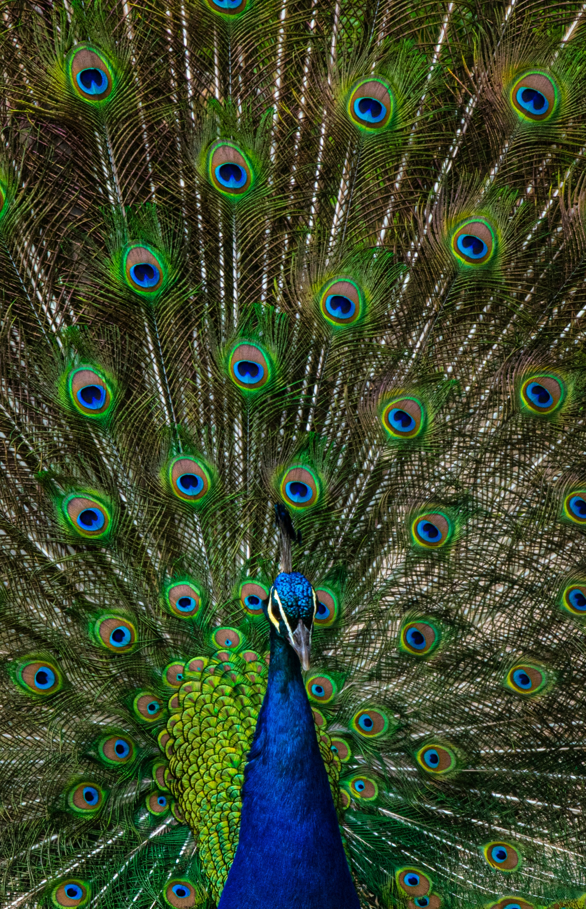
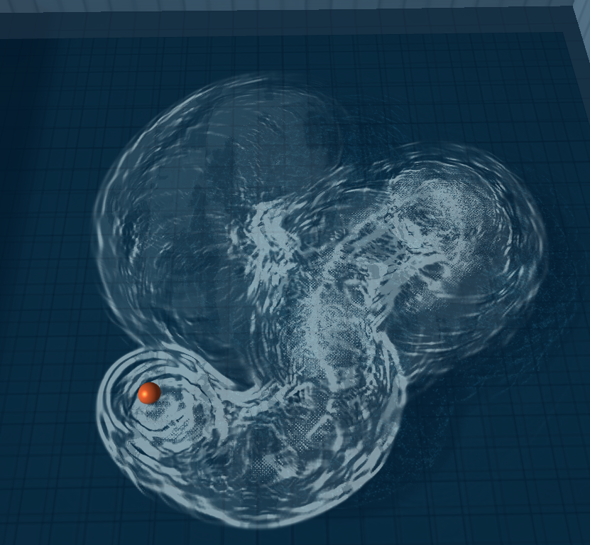

Small tip: you can drag and toss the orbs around, or click to learn more


An interactive website explaining the evolution of text-to-speech.

A Three.js water prototype with interactive waves, buoyancy, wakes, foam, caustics, and ship movement.
 View on GitHub
View on GitHub
I'm currently studying Technology and Multimedia at the Polytechnic University of Valencia (UPV).
My interests lie in full-stack and software development, game creation (including VR), and 2D/3D design, areas where I can combine creativity and technology.
I've always been drawn to art, starting with hands-on forms and later digital. That mix of creativity and logic naturally led me to this field.
Outside academics, I enjoy any outdoor activity from rock climbing to kayaking.
Metropolitan School of Panama (MET) 2011 - 2021
↓
SEK International School Levante 2021 - 2022
↓
Polytechnic University of Valencia (UPV) 2022 - Present
↓
Norwegian University of Science and Technology (NTNU) ERASMUS 2025